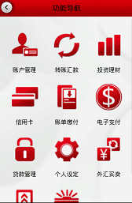

手机银行客户端在每次启动时，将会自动进行版本检查，如有新版本发布，则会向您提示新版本信息并提供下载功能。更新分为强制更新或非强制更新，如果当前版本为强制更新，则更新版本后才可使用客户端。
输入密码即可进入中国银行手机银行系统进行相关金融交易。
如果您本地管理中的用户身份设置为用户名则还需输入您的登录用户名和验证码。
如果您已是我行客户且尚未开通手机银行，您可通过自助方式注册开通手机银行并登录。自助注册时需要您输入个人相关信息。
如果您已是我行客户，可通过在线预约申请开户功能提交开通电子银行服务的申请；如果您还不是我行客户，可以通过在线预约申请开户功能提交办理借记卡并开通电子银行服务的申请。提交申请成功后，您可直接到我行任意网点机构办理办理相关业务。

功能导航界面中包含了中国银行手机银行目前支持的所有功能。
功能导航界面中还包含了一些常用功能，您可由此快捷进入该功能，进行相关交易。
注：查询版客户只能使用“账户管理”、“信用卡”和“个人设定”三个功能。
您可以通过账户管理功能获得关联账户的账户详情、交易明细，或进行账户自助关联。
您可以通过转账汇款功能进行活期转账汇款和定期转账汇款，并进行转账及汇款的管理，也可通过主动收款功能发起主动收款和管理收款信息。
您可以通过投资理财功能进行如黄金、外汇、基金等投资理财业务。
您可以通过信用卡功能查询您的信用卡账户信息、未出账单、已出账单，或进行信用卡还款。
您可以通过账单缴付功能自助缴纳各种日常费用。缴费账户必须为长城电子借记卡。
您可以通过电子支付功能开通/取消电子支付服务，并设置支付账户和支付额度，也可以查询您的支付记录。您开通支付服务后，就可以使用手机银行支付您在手机购物网站上购买的商品。
您可以通过贷款管理功能中的历史还款查询、逾期信息查询和剩余还款计划查询功能查询您贷款账户的相应信息，并使用提前还款测算功能进行贷款还款计算。
您可以通过个人设定功能对手机银行系统进行相关设定。个人设定包括：手机银行账户设定、默认账户设定、设置预留信息、账户别名维护、新旧账号对照、交易限额设置、修改手机银行密码、登录手机号管理、登录用户名管理。
点击menu键，可以弹出上述工具条。
点击“帮助”可以查看当前页面的帮助信息,或者点击“客服热线”进行人工咨询。
点击“主菜单”按钮，可以返回到主菜单上。
点击“退出”按钮，可以退出程序。
在屏幕的最上方，您可以看到以下内容。
点击上示按钮，可以返回到当前页面的上一级。
点击上示按钮，可以返回到主菜单。